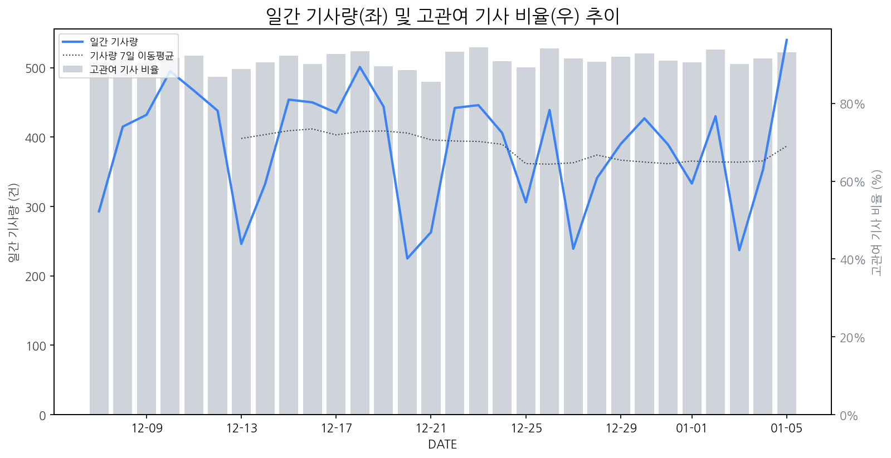

1
시장 활동 지표
기사량 추세 & 이상 징후 탐지
시장의 '전체 기사량'이 평소보다 비정상적으로 급증했는지(Spike)를 차트로 확인하고, LLM이 분석한 급등의 핵심 원인을 파악할 수 있음

고관여 기사란? 산업 연관 키워드로 수집된 기사들 중 디스플레이 키워드에 가중치를 반영하여 도출된 관련성 높은 기사
수집된 기사 수 (2026-01-05)
540
+38% WoW
기사량 변동 수준 (7일 이동평균 대비)
±6.7% 이하
2
오늘의 키워드
급격한 관심 ↑, 주목해야 할 키워드
1
lg전자
+8.1σ
CES 2024에서 선보인 AI 기반 혁신 기술과 마이크로 RGB TV가 시장의 주목을 받으며 주가 급등을 견인했습니다.
Related Metrics
금일 언급량: 44, 전일 대비: +37
Interpretation
AI TV 경쟁력 강화
Next Step
'lg전자' 관련 상세 기사 및 경쟁사 반응 모니터링
2
tv
+6.2σ
삼성·LG, 마이크로 RGB 및 차세대 프리미엄 TV 경쟁 본격화되며 관심 집중.
Related Metrics
금일 언급량: 41, 전일 대비: +36
Interpretation
신기술 프리미엄 TV 경쟁 촉발
Next Step
'tv' 관련 상세 기사 및 경쟁사 반응 모니터링
3
삼성전자
+3.8σ
삼성전자가 CES 2026에서 AI 기반의 혁신적인 디스플레이 및 가전 제품을 선보이며 시장의 주목을 받았습니다.
Related Metrics
금일 언급량: 36, 전일 대비: +27
Interpretation
AI 기술 접목, 시장 선도
Next Step
주요 기업 '삼성전자'의 이벤트가 감지되었습니다. 4번 섹션(주요 기업 EVENTS)에서 상세 내용을 확인하세요.
4
디스플레이
+3.4σ
삼성디스플레이가 AI와 결합된 OLED 기술을 CES 2026에서 선보일 예정이라 관심이 집중되었습니다.
Related Metrics
금일 언급량: 25, 전일 대비: +20
Interpretation
AI OLED, 새로운 성장 동력 확보
Next Step
'디스플레이' 관련 상세 기사 및 경쟁사 반응 모니터링
3
실시간 Risk 키워드
경계해야 할 시그널 탐지
특정 토픽의 부정 감성 점수가 급등할 때 이를 즉시 탐지하고, "근거 기사" 링크를 통해 리스크의 실체를 빠르게 파악할 수 있음
키워드 분석 결과, 오늘은 걱정할 만한 하락 신호가 없습니다. (부정 언급량 변화: +1.5σ 이내)
4
주요 이벤트 모니터링
실시간 산업 동향 파악을 위한 주요 활동
최근 발생한 주요 기업들의 신제품 출시, 투자 등 주요 이벤트를 제공하여 매일 경쟁사 동향을 확인할 수 있음
LG디스플레이와 삼성디스플레이가 CES 2026에서 AI 시대를 선도할 OLED 기술을 선보이며 '경험의 진화'를 강조할 예정이다. 이는 미래 디스플레이 시장의 새로운 방향성을 제시하는 중요한 발표가 될 것으로 예상된다.
Impact
이번 이벤트는 AI 시대에 최적화된 차세대 디스플레이 기술의 중요성을 부각시키고, OLED 기술의 적용 범위를 더욱 확장시켜 관련 시장의 경쟁을 심화시킬 것으로 전망된다.
Next Step
디스플레이 제조 기업은 AI 기반의 사용자 경험을 극대화할 수 있는 차별화된 OLED 기술 개발 및 시연 전략을 수립해야 한다.
SFA반도체, 한미반도체, 제이엔비 등 반도체 장비 관련 기업들의 주가가 상승세를 보이고 있습니다. 이는 반도체 장비 시장의 긍정적인 전망을 반영하는 것으로 해석됩니다.
Impact
반도체 장비 시장의 활기는 디스플레이 제조 공정에도 영향을 미쳐, 장비 수주 증가 및 기술 개발 경쟁 심화로 이어질 수 있습니다.
Next Step
디스플레이 제조 기업은 이번 반도체 장비 시장의 활황을 기회 삼아, 첨단 디스플레이 제조에 필요한 핵심 장비 확보 및 자체 기술 개발 역량 강화 방안을 모색해야 합니다.
CES 2026에서 삼성과 LG는 130인치 및 무선 OLED TV를 선보이며 차세대 TV 시장에서의 경쟁 우위를 확보하려는 움직임을 보였습니다. 이는 기존의 TV 기술을 뛰어넘는 혁신을 통해 시장을 선도하겠다는 의지를 보여줍니다.
Impact
삼성과 LG의 혁신적인 신제품 출시는 초고화질, 대형화, 사용자 편의성 증대를 통해 프리미엄 TV 시장의 성장을 견인하고, 경쟁사들에게도 기술 개발 및 제품 혁신에 대한 압박을 가할 것으로 예상됩니다.
Next Step
경쟁사들은 삼성과 LG의 기술 트렌드를 분석하여 자사 제품의 차별화 전략을 수립하고, 핵심 기술 개발 및 생산 능력 강화에 집중해야 합니다.
CES 2026에서는 '피지컬 AI' 기술이 주목받으며, 이는 기술력과 지정학적 이슈가 맞부딪히는 현상을 보여줍니다. AI의 물리적 구현과 그 과정에서의 국제적 역학 관계가 중요하게 다뤄질 것으로 예상됩니다.
Impact
디스플레이 시장은 피지컬 AI의 부상으로 인해 새로운 폼팩터, 스마트 재질, 그리고 AI 기반의 사용자 경험을 통합하는 기술 개발에 대한 요구가 증대될 것입니다.
Next Step
디스플레이 제조 기업은 피지컬 AI 구현에 필수적인 고해상도, 유연성, 내구성 및 AI 연동 인터페이스 기술 개발에 집중하고, 지정학적 리스크를 고려한 공급망 다변화 전략을 모색해야 합니다.
메타가 AR 글래스 표준 경쟁 우위를 위해 라온텍에 투자를 진행했습니다. 이는 라온텍이 개발한 디스플레이 기술이 AR 글래스의 미래 표준으로 자리 잡을 가능성을 시사합니다.
Impact
AR 글래스 시장에서 디스플레이 기술 표준 경쟁이 심화될 것이며, 라온텍의 기술력을 보유한 기업들이 시장을 선점할 기회를 얻게 될 것입니다.
Next Step
AR 글래스용 디스플레이 기술 개발 및 표준화 동향을 면밀히 모니터링하고, 핵심 기술 확보 및 협력 방안을 적극적으로 모색해야 합니다.
5
지금 주목해야 할 뉴스 TOP 3
반도체 장비 관련주, '덩실덩실' SFA반도체·한미반도체·제이엔비... '한...
로컬 요약 모델 실행 중 오류 발생: 제목을 클릭하여 기사 전문을 확인할 수 있습니다.
[CES 2026] TV ‘巨巨전쟁’서 승기잡은 삼성·LG… 130인치·무선 OLED로...
로컬 요약 모델 실행 중 오류 발생: 제목을 클릭하여 기사 전문을 확인할 수 있습니다.
[막오른 'CES 2026'] "단순 편리함 넘어 AI가 바꾸는 미래 일상 만나요"
삼성전자는 4~7일(현지시간) 윈 호텔에 마련한 단독 전시관에서 '더 퍼스트룩' 행사를 열고 '초연결 생태계'를 구현한 '초연결 생태계'를 구현한 '초연결 생태계'를 구현한 '초연결 생태계'를 구현한 '초연결 생태계'를 구현한 '초연결 생태계'를 구현한 '초연결 생태계'를 구현한 'CES 2026'이 올해도 각국 기업들의 AI 기술력을 알리는 장이 될 전망이다.